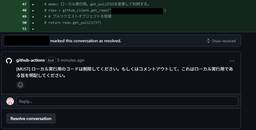
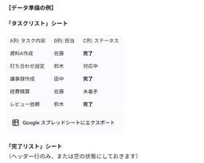

フューチャー技術ブログ
https://future-architect.github.io/
フューチャーの開発者による公式技術ブログです。業務で利用している技術を幅広く紹介します。
フィード

GitHub Actionsで利用できるGeminiを利用したPRレビュースクリプトを作ってみた。
 1
1
フューチャー技術ブログ
<p><a href="/articles/20250707a/">AI Tips連載</a>の10日目の記事です。</p><h1 id="はじめに"><a href="#はじめに" class="headerlink"
2日前
PDFをBigqueryにぶっこんで効率よく構造化する 1
フューチャー技術ブログ
<img src="/images/20250724a/Gemini_Generated_Image_gwxj4tgwxj4tgwxj_(1).png" alt="" width="1200" height="1200" loading="lazy"><p><a
3日前
わかりやすいADKのAPIリクエストツール作成
フューチャー技術ブログ
<p><a href="/articles/20250707a/">AI Tips連載</a>の8日目の記事です。</p><h1 id="はじめに"><a href="#はじめに" class="headerlink"
4日前

生成AIとはじめる、バックオフィス業務改革 ～Geminiの有効な使い方～ 1
フューチャー技術ブログ
<p>こんにちは、FVGの村田です。<a href="/articles/20250707a/">AI Tips連載</a>の7日目の記事です。</p><h1 id="はじめに"><a href="#はじめに" class="headerlink"
5日前

Software Design 2025年8月号「2038年問題を考える」を寄稿しました
フューチャー技術ブログ
<a href="https://gihyo.jp/magazine/SD/archive/2025/202508"><img src="/images/20250718a/image.png" alt="" width="800" height="1130"
9日前
生成AI時代の知識の獲得・体系化・伝達術
フューチャー技術ブログ
<h1 id="1-はじめに"><a href="#1-はじめに" class="headerlink" title="1. はじめに"></a>1. はじめに</h1><p>製造エネルギー事業部の後藤です。今回は「<a
10日前
日本語×ソフトウェア開発に強いLLMの開発に取り組んだ挑戦者の備忘録 (後編)
フューチャー技術ブログ
<p><a href="/articles/20250707a/">AI Tips連載</a>の5本目の記事となります。</p><h1 id="はじめに"><a href="#はじめに" class="headerlink"
11日前
日本語×ソフトウェア開発に強いLLMの開発に取り組んだ挑戦者の備忘録 (前編)
フューチャー技術ブログ
<p><a href="/articles/20250707a/">AI Tips連載</a>の4本目の記事となります。</p><h1 id="はじめに"><a href="#はじめに" class="headerlink"
12日前
Apple Vision Pro における LLM 利用について
フューチャー技術ブログ
<p><a href="/articles/20250707a/">AI Tips連載</a>の3本目の記事となります。</p><p>Apple Vision ProでLLMを利用する方法について整理します（ユーザ向けのAI機能であるApple
13日前
会議での活用方法から考える、人間と生成AIの最適な共存関係
フューチャー技術ブログ
<p><a href="/articles/20250707a/">AI Tips連載</a>の2本目の記事となります。</p><h1 id="はじめに"><a href="#はじめに" class="headerlink"
16日前
プロンプトエンジニアリングから逆算して考える、エンジニアのスキルアップ
フューチャー技術ブログ
<img src="/images/20250708a/Gemini_Generated_Image_9zanda9zanda9zan.jpeg" alt="Gemini_Generated_Image" width="1200" height="1200"
19日前
AI Tips連載はじめます
フューチャー技術ブログ
<img src="/images/20250707a/unnamed.jpg" alt="unnamed.jpg" width="1024" height="1024" loading="lazy"><h1 id="はじめに"><a href="#はじめに"
20日前
Kubernates✖️MLflow✖️GCPで簡単にAIモデル公開
フューチャー技術ブログ
<img src="/images/20250701a/image.png" alt="image.png" width="1200" height="449" loading="lazy"><p>こんにちは！Energy Transformation
1ヶ月前
ローカルKubernetesでdbtをコンテナ化して実行してみる
フューチャー技術ブログ
<img src="/images/20250630a/top.png" alt="" width="446" height="162"><h1 id="はじめに"><a href="#はじめに" class="headerlink"
1ヶ月前
LLMコンテナイメージでLazy Pullingの効果を検証
フューチャー技術ブログ
<h1 id="はじめに"><a href="#はじめに" class="headerlink" title="はじめに"></a>はじめに</h1><p>最近仕事でLLMサーバーを構築することになりました。</p><p>雰囲気をお伝えすると、HuggingFaceの
1ヶ月前
AI Agent用フレームワーク「Dapr Agents」について調べてみた
フューチャー技術ブログ
<img src="/images/20250625a/ラジオ風カーソルその2.png" alt="ラジオ風カーソルその2.png" width="1200" height="800" loading="lazy"><blockquote><p>Today, we are
1ヶ月前
Gemma3 + Unsloth + GitLab CI/CDで構築する完全オンプレミスAIコードレビュー環境
フューチャー技術ブログ
<p>本記事は、<a href="/articles/20250603a/">CI/CD連載</a>の6本目の記事となります。</p><h1 id="はじめに"><a href="#はじめに" class="headerlink"
1ヶ月前
GitHub ActionsのCI/CDパイプラインに静的コード解析Sonar Qubeを組み込んでみた
フューチャー技術ブログ
<p><a href="/articles/20250603a/">CI/CD連載</a> 4本目の記事です。</p><h1 id="はじめに"><a href="#はじめに" class="headerlink"
1ヶ月前
初めての海外カンファレンスとKubeCon Japan参加レポート
フューチャー技術ブログ
<img src="/images/20250617a/IMG_2577.jpg" alt="" width="1200" height="747" loading="lazy"><p>こんにちは。TIGの伊藤です。この記事は<a
1ヶ月前
Notary v2（Notation）によるコンテナイメージ署名
フューチャー技術ブログ
<img src="/images/20250616b/notary-horizontal-color-1110x298.png" alt="notary-horizontal-color-1110x298.png" width="1110" height="298"
1ヶ月前
CNCF連載2025
フューチャー技術ブログ
<img src="/images/20250616a/cncf-color.png" alt="" width="1200" height="191" loading="lazy"><h1 id="CNCF-とは"><a href="#CNCF-とは"
1ヶ月前
macOS 26でLinuxコンテナのネイティブサポートが来る
フューチャー技術ブログ
<p>現在開催中の WWDC で、Linux コンテナネイティブサポートが発表されました。</p><ul><li><a
2ヶ月前
Xcode Cloudで最初に作りたい基本的なワークフロー
フューチャー技術ブログ
<img src="/images/20250609a/image.png" alt="" width="868" height="518" loading="lazy"><h1 id="はじめに"><a href="#はじめに" class="headerlink"
2ヶ月前